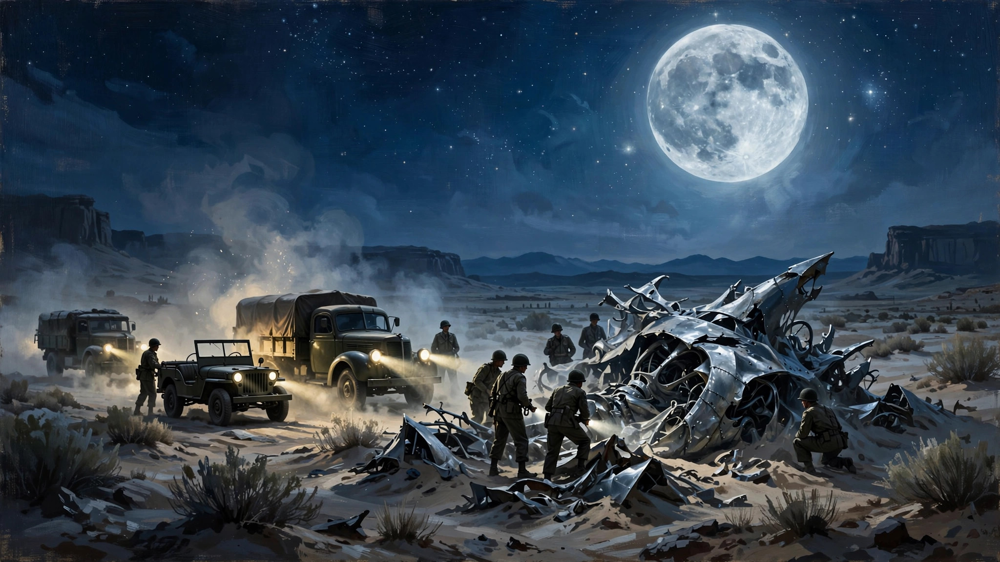
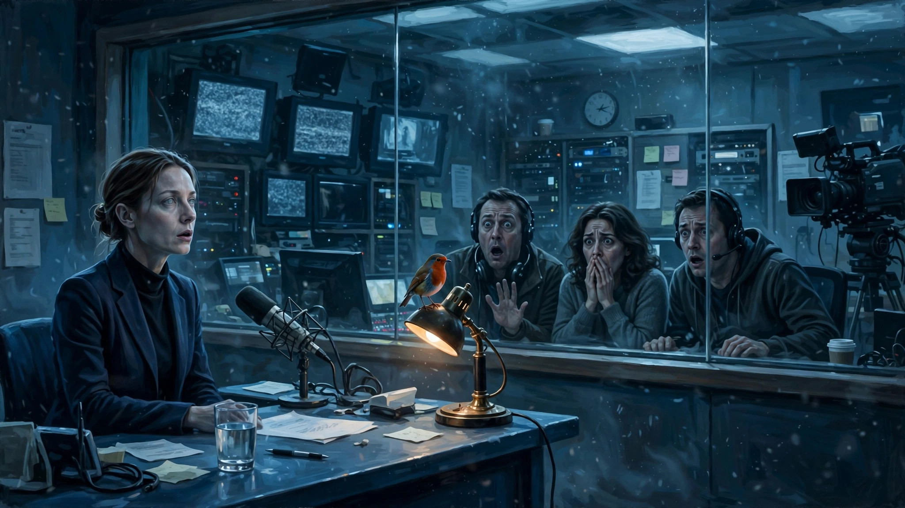

“科幻教主”尚能饭否？
欢迎点击上方名片关注我，您的支持是我坚持原创的最大动力。
早几个月前就刷到《揭密日》(Disclosure Day)的预告片，当时对里面的几个片段印象深刻。再一看是斯皮尔伯格导的，愈发期待。 斯皮尔伯格是大名鼎鼎的好莱坞导演。其作品数量之多、风格之丰富、叫好又叫座之占比，即便在人才济济的好莱坞也是笑傲江湖般的存在。他执导的很多电影早已成为影史经典，仅举几例：《辛德勒的名单》、《拯救大兵瑞恩》、《幸福终点站》、《大白鲨》、《外星人ET》等等，随便挑一个出来都是同类型电影中的标杆。在斯皮尔伯格众多的经典作品中，科幻作品尤为突出，也格外成功。我不知道有没有人叫过他“科幻教主”，反正在我心目中他绝对当得起这样的称号。这样一位传奇导演的新作，怎么不令人心动和期待？
终于等到电影上映了，我却看到好多先睹为快的自媒体给出了一些不太好的评价，说"无聊"、“看不懂”、“逻辑混乱”等等。今天一看豆瓣评分才6.5。我没具体统计过斯皮尔伯格过往作品有多少8分甚至9分以上的，但绝对不在少数。所以，这部新作的评分对于斯皮尔伯格的过往成绩来说简直是惨不忍睹。
尽管有了这么多负面评价，作为斯皮尔伯格的“死忠脑残粉”，我还是抱着些许侥幸的心态走进了电影院。刚看完时头脑里感觉空空的，好像看了什么，好像又什么都没看。很少一部电影让我产生这种感觉。一般电影看完后马上就能产生“好”或“坏”的简单第一印象。但像这样看完头脑空空的真是很少见。最终我还是产生了积极的看法，简言之，在我看来，这是一部题材不错、总体表现中上的科幻片。但是，影片最大的问题在于情节过于平淡、格局也比较有限。如果是一个新人导演拍出这种水平，那还是值得鼓励的。但这可是斯皮尔伯格啊，确实有点说不过去。
本片的题材在科幻类型中不算新，又是美国政府掩盖发现外星人事实的传统阴谋论（都用上“传统”这个字眼了可见这个阴谋论有多老）。当然选取这个题材也是有背景原因的。去年以来，特朗普政府先后两次公布关于UAP（不明异常现象，可以理解为UFO的更官方说法）的解密影像资料，引起舆论广泛关注。甚至火到圈外，很多原本不关注不明飞行物和外星人领域的人也兴致勃勃地参与了讨论。我想斯皮尔伯格多少是想借这个题材在公众中重新火起来的势头，推出一部外星人阴谋论题材的科幻片。趁热打铁想法挺好，可惜实现的效果不好。下面来讲讲剧情（剧透警告）。
影片以真实事件（即1947年的“罗斯威尔事件”）为背景。1947年，在美国空军基地51区附近的罗斯威尔市有一个疑似不明飞行物坠毁。美国军方迅速封锁了现场，不久后宣布这里坠毁的只是一个气象气球。但很多目击者和亲历者都认为那绝对不是气象气球，美国军方掩盖了事实。直到今日，尽管多届美国政府否认这个阴谋论，并且分批公布了一些不明飞行物的影像资料，但仍无法让公众信服。

在这个背景下，影片相当于脑补了这段事件的前后真相。原来罗斯威尔坠毁的果然是一艘先进的外星飞船，飞船上甚至还有几名外星人宇航员幸存。当时，美国军方对外星人尸体进行了解剖，但对幸存的活体外星人暂时不知怎么处理，只得一直将他们关押。直到1970年代，一个叫Wardex的神秘非政府组织与美国国防部合作，开始对活体外星人进行试验，并对他们的设备和飞船进行逆向工程，以期获取先进的外星科技。但Wardex没想到的是，其中一个活体外星人（他们称为活体17号）竟然逃脱。活体17号逃脱后，与两名普通美国小孩（一男一女，分别叫Daniel和Margret）进行了意识交流，对他们的大脑做了一些技术处理，与其形成某种意识连接。接着分别讲讲男孩女孩此后的遭遇。
先来说说那个男生Daniel的经历（看过奈飞英剧《王冠》的朋友应该熟悉这位演员，他在王冠中饰演青年查尔斯亲王）。他长大后加入一个吹哨人组织，该组织致力于揭露Wardex和美国政府力图掩盖的肮脏勾当。组织的领导人叫Hugo。Hugo原来也来自Wardex，而且与Wardex的负责人Noah（“脸叔”饰）曾是紧密的合作伙伴。但后来Hugo不齿Wardex对活体外星人进行残酷试验的做法，愤而离开，与Noah分道扬镳。Daniel后来受Hugo之托以网络安全专家身份加入Wardex，并择机偷出了一个神秘的手持式外星设备以及一批有关Wardex外星人试验的影像资料U盘。Noah领导下的Wardex于是开始对Daniel穷追不舍，并一度抓到Daniel的女友，企图威胁Daniel就范。可当Daniel拿出外星人设备时，Wardex的人如临大敌，不敢轻举妄动，只得眼睁睁看着Daniel带着女友逃脱。
再来讲讲Margret这边的情况。Margret现在是堪萨斯市一家电视台的气象节目主持人，虽已到中年，但风韵尤存，事业也在上升期。她正计划转行去做新闻主持人。一天她在家和男朋友谈话时，从窗外飞来一只北美红雀。这只鸟一点不怕人，还与Margret对视了一会。Margret呆了一阵子，像是睁着眼睛睡着了。等她恢复常态后，突然对男友说了一大堆俄语（而她从来没有学过俄语）。这种奇怪状态持续了一会她才说回英语。紧接着她赶去电视台上班，她主持的直播气象节目马上就要开播。节目开始没多久，本来妙语连珠的她突然当场卡住，接着发出了一串人类无法理解的声音。虽然电视台马上切换了画面，但那段诡异的画面和那串奇怪的声音已经随着电视信号广播了出去。这一事件引发了公众的关注甚至恐慌。

电视直播事件标志着Margret脑中的外星潜意识被激发。她不久也与Daniel建立了意识连接，并协助Daniel逃脱Wardex的追捕。虽然Daniel和Margret一直有外星人意识控制能力的帮助，但Wardex这边实力也不弱，除了各种人员装备方面的绝对优势，他们还在追捕中用上了逆向工程中获得的外星技术，同样是某种意识控制能力。当然他们使用这种技术还不熟练，导致效果时好时坏。这就给Daniel和Margret的逃脱创造了机会。经过一番各种交通工具的惊险追逐（这段追逐戏让人不禁想到碟中谍之类的动作戏），Daniel和Margret终于成功逃脱，并与Hugo他们在组织所在的一个秘密仓库会合。
在仓库里，通过手持外星设备，Hugo他们帮助Margret和Daniel回忆起了童年时与外星人的首次接触，他们终于彻底明白了这一切事情的原委。这时，Wardex的大队人马也刚好赶到。与Hugo一干人商议后，Daniel和Margret决定去Margret所在的电视台公布Wardex的秘密外星人试验影像。Wardex当然不会对此坐视不理，Noah随后也率领手下赶到电视台。正在危急关头，Margret启用外星人意识控制能力阻止了Noah下命令拦截。没有Noah的命令，Wardex的人马只有眼睁睁看着Margret和Daniel接下来要做的事情。
Daniel把带来的所有影像资料交给Margret，Margret通过意识控制顺利地让电视台负责人“同意”播放这些资料。影像资料从地方电视台播出后，马上信号被实时转播到全美国、全世界。全球所有人都在同一时间看到了关于罗斯威尔外星人飞船坠毁事件、外星人尸体解剖、外星人活体试验等等十分令人震惊的画面。
这是一次真正完整的揭密。影片也到此戛然而止，所以这次惊天揭密事件会在全球造成什么样的影响以及多大规模的冲击波，我们也不得而知。但影片中外星人通过Margret向人类广播的一句话（也就是Margret直播时突然讲的一句外星语）值得人深思：Don't be afraid of what you don't know（不要害怕你不了解的事情）。
影片介绍到这儿，再来谈谈我对本片的看法。一言以蔽之，我觉得斯皮尔伯格在本片中还是保持了一贯的水准的。很多人觉得“不好看”，是因为科幻片（尤其是涉及外星人的）必然有火爆大场面（如《独立日》、《世界大战》等）的刻板印象造成的心理落差。而本片将更多重点放在掩盖/揭密这场拉锯战本身带来的“我们在宇宙中是否孤独”的终极思考。一定要纠结“大场面”其实也不是完全没有，例如Wardex追捕Daniel和Margret的过程就有相当多的追逐打斗戏分。估计这也是主创想努力使影片更有“吸引力”而作出的某种妥协。但在我看来，这些追逐打斗戏和影片主题关系不大，显得格格不入。纯粹为了显得好看而加大动作戏篇幅实无必要。
所以，本片的真正问题不在于不够火爆，而在于没有足够的创新。斯皮尔伯格是“佳片等身”的资深大导和科幻教主没错，但如果数十年如一日地吃老本炒冷饭，年轻一代的观众也不会买账。
上世纪外星人题材一度非常火爆，前面提到的《第三类接触》、《外星人ET》、《独立日》甚至在全世界范围卷起了UFO热。这股热潮也波及到中国，当时西北某个省（甘肃？）还出了一个专门的UFO杂志叫《飞碟探索》，当时这个杂志的热门程度不亚于《读者文摘》（也就是后来的《读者》）。我爸爸买过几期，我每期都看得如痴如醉。后来工作后，还专门搜集来没看过的一些期，一本不落地“补课”。
说这些题外话无非是想说明，斯皮尔伯格的成名在很大程度上归功于抓住了这波外星人文化热潮的红利。不仅如此，他还通过旺盛的创造力和想象力将这种红利的效应放大到极致。但几十年过去了，经过了电脑时代、互联网时代、移动互联网时代，直到现在的AI时代。信息传播媒介、方式、效率一直在变化，受众的三观、兴趣、审美也随之一直在迭代更新。有些充满神秘性、未知性的题材的确能够经久不衰，但前提是要有与时俱进的创新点。
本片的技术没问题，叙事也流畅，演员表演也不错，那问题到底出在哪呢？围绕美国军方和外星人的阴谋论已经盛行几十年了，关注的人耳朵都听出老茧了，连不关注的人也在自媒体的“贴脸轰炸”下看了几轮美国政府公布的UAP影像。但影片完全没有脱离这个叙事的框架，简单说就是没有讲出什么新的东西来。说白了，就是没有“爽点”。虽然我对“爽点”这个东西不太在意，尤其是剧情片就更不在意。但你毕竟不是走纯文艺路线的，完全没有爽点，那就只有靠我这样的死忠脑残粉的情怀咯。这就是问题所在，哪怕像斯皮尔伯格这样的世界级大导演，有时也走不出惯性思维的局限。可惜可叹呐！